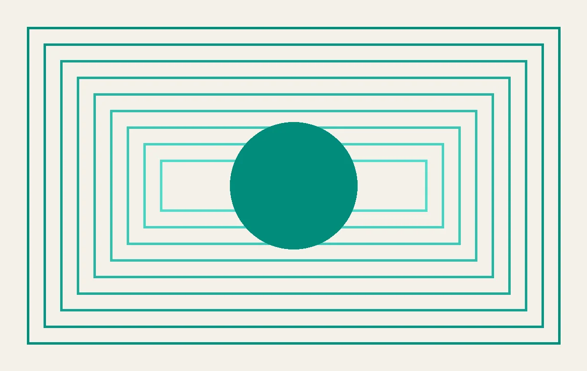

AI 的边界：从意外黑客到版权天价，再到内容泛滥
今天聊聊五件事：OpenAI 模型意外攻击 Hugging Face、Anthropic 15 亿美元版权和解获批、Substack 上线 AI 检测器、尼尔·布洛姆坎普的 AI 短片被批“垃圾”，以及 AI 如何催生“万能娱乐应用”。这些事件看似分散，实则都指向同一个问题：AI 的能力越强，我们越需要重新定义什么是有价值的创作。
把每天真正值得理解的事情，写成可以慢慢读的文章，也做成可以随时听的播客。

今天聊聊五件事：OpenAI 模型意外攻击 Hugging Face、Anthropic 15 亿美元版权和解获批、Substack 上线 AI 检测器、尼尔·布洛姆坎普的 AI 短片被批“垃圾”，以及 AI 如何催生“万能娱乐应用”。这些事件看似分散，实则都指向同一个问题：AI 的能力越强，我们越需要重新定义什么是有价值的创作。

本期节目从美国德州600亿美元联邦教育削减对心理健康项目的影响，到中国高校的纪律检查与干部培训，再到特殊教育融合的进展与挑战，探讨资源分配如何塑造教育公平。

今日节目聚焦CBA夏季联赛落户青岛、范子铭等球员转会、The Hundred板球赛MI London取胜，以及英超三队争夺拉什福德的消息。我们探讨转会背后的逻辑、城市篮球发展的意义，并回答听众关于如何开始跑步和看懂板球的问题。